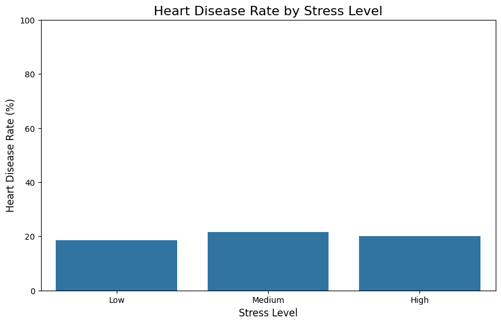
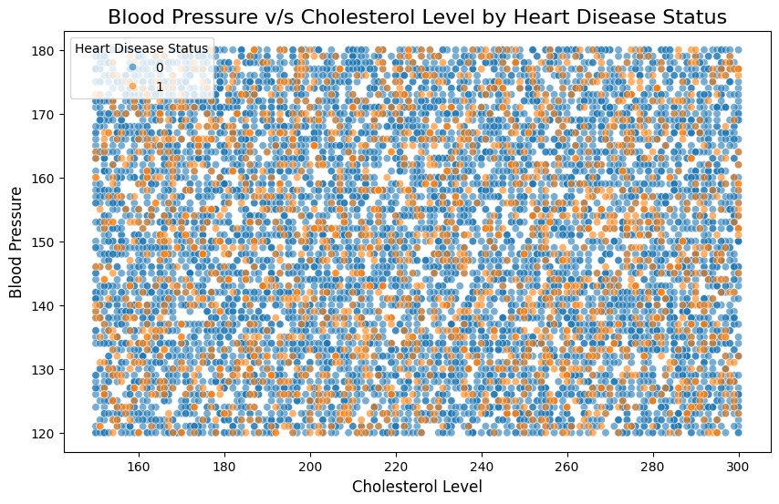
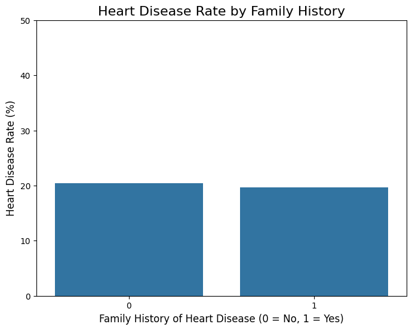

Heart Disease Analysis Report
Author: Anant Sastrula
Date: September 10, 2025
Dataset: Heart Disease Dataset (Kaggle)
Link: https://www.kaggle.com/datasets/oktayrdeki/heart-disease/data
Executive Summary
This report presents a comprehensive exploratory data analysis of heart disease risk factors using a dataset containing 10,000 observations and 21 variables. The analysis reveals surprising findings that challenge conventional understanding of heart disease predictors.
1. Dataset Overview
Data Source and Structure
- Source: Kaggle Heart Disease Dataset
- Size: 10,000 observations × 21 variables
- Objective: Identify key risk factors contributing to heart disease
Variable Descriptions
| Variable |
Description |
| Age |
Individual's age in years |
| Gender |
Individual's gender |
| Blood Pressure |
Individual's blood pressure measurement |
| Cholesterol Level |
Individual's total cholesterol level |
| Exercise Habits |
Self-reported exercise level |
| Smoking |
Smoking status (Yes/No) |
| Family Heart Disease |
Family history of heart disease (Yes/No) |
| Diabetes |
Diabetes diagnosis status (Yes/No) |
| BMI |
Body Mass Index |
| High Blood Pressure |
High blood pressure diagnosis (Yes/No) |
| High LDL Cholesterol |
High "bad" cholesterol levels (Yes/No) |
| Alcohol Consumption |
Self-reported alcohol intake (None, Low, Medium, High) |
| Stress Level |
Self-reported stress level (Low, Medium, High) |
| Sleep Hours |
Average hours of sleep per night |
| Sugar Consumption |
Self-reported sugar intake (Low, Medium, High) |
| Triglyceride Level |
Blood triglyceride level |
| Fasting Blood Sugar |
Blood sugar level after fasting |
| CRP Level |
C-reactive protein level (inflammation marker) |
| Homocysteine Level |
Blood homocysteine level |
| Heart Disease Status |
Target variable: Heart disease diagnosis (Yes/No) |
2. Research Methodology
Objective
To identify key demographic and lifestyle risk factors that contribute to heart disease through comprehensive exploratory data analysis.
Research Questions
1. Lifestyle Factors: What is the relationship between stress level, sleep hours, and heart disease status?
2. Clinical Indicators: How do blood pressure and cholesterol levels relate to each other and differ between patients with and without heart disease?
3. Genetic Factors: What is the impact of family history on individual heart disease risk?
3. Exploratory Data Analysis
3.1 Lifestyle Factors Analysis
Sleep Hours vs. Heart Disease Status
Methodology: Box plot comparison of sleep hours distribution between individuals with and without heart disease.
 Key Findings:
- Both groups show identical median sleep duration (7 hours)
- Interquartile ranges are nearly identical
- Conclusion: Sleep hours do not appear to be a distinguishing factor for heart disease in this dataset
Key Findings:
- Both groups show identical median sleep duration (7 hours)
- Interquartile ranges are nearly identical
- Conclusion: Sleep hours do not appear to be a distinguishing factor for heart disease in this dataset
Stress Level vs. Heart Disease Status
Methodology: Calculated heart disease rates as percentages across different stress levels to ensure fair comparison.

Key Findings:
- Low stress: ~19% heart disease rate
- Medium stress: ~22% heart disease rate
- High stress: ~21% heart disease rate
- Conclusion: Minimal variation across stress levels suggests no strong relationship
3.2 Clinical Indicators Analysis
Blood Pressure vs. Cholesterol Level Interaction
Methodology: Scatter plot analysis with points colored by heart disease status to identify patterns and correlations.

Key Findings:
- No clear linear relationship between blood pressure and cholesterol
- No distinct clustering of heart disease cases in high-risk zones
- Heart disease cases are randomly distributed across all value ranges
- Conclusion: These clinical markers do not provide clear visual distinction between affected and unaffected individuals
3.3 Genetic Risk Factor Analysis
Family History Impact
Methodology: Percentage-based comparison of heart disease rates between individuals with and without family history.

Key Findings:
- No family history: ~20.4% heart disease rate
- Family history present: ~19.8% heart disease rate
- Conclusion: Surprisingly, no significant difference observed—contrary to established medical knowledge
🔍 Critical Data Quality Insight
Important Finding: The consistent absence of expected correlations across multiple well-established risk factors strongly suggests this dataset may be synthetic or artificially balanced, removing real-world medical relationships that would typically be observed.
4. Statistical Hypothesis Testing
Hypotheses Formulated
Based on the exploratory analysis, three formal hypotheses were established for statistical validation:
Hypothesis 1: Family History
- H₀: No association between family heart disease history and individual heart disease status
- H₁: Significant association exists between family heart disease history and individual heart disease status
Hypothesis 2: Body Mass Index (BMI)
- H₀: Mean BMI is equal between individuals with and without heart disease
- H₁: Mean BMI differs significantly between individuals with and without heart disease
Hypothesis 3: Smoking Status
- H₀: No association between smoking status and heart disease status
- H₁: Significant association exists between smoking status and heart disease status
Statistical Testing Results
Family History Analysis
- Test Used: Chi-Square Test of Independence
- Significance Level: α = 0.05
- Result: p-value = 0.4133
- Conclusion: Fail to reject H₀ (p > 0.05)
Interpretation: No statistically significant association found between family history and heart disease status, confirming the surprising EDA findings.
5. Key Findings & Implications
Major Discoveries
1. Lifestyle Factors: Sleep hours and stress levels show no meaningful relationship with heart disease occurrence
2. Clinical Markers: Blood pressure and cholesterol levels fail to distinguish between affected and unaffected individuals
3. Genetic Factors: Family history shows no predictive value, contradicting established medical knowledge
4. Statistical Confirmation: Formal hypothesis testing validates the absence of expected relationships
Data Quality Assessment
The uniform lack of correlation across multiple established risk factors suggests:
- Dataset may be synthetic or artificially generated
- Real-world medical relationships have been removed or obscured
- Findings should not be extrapolated to clinical decision-making
6. Recommendations & Future Directions
Immediate Next Steps
1. Feature Engineering
- Create composite risk scores combining multiple variables
- Explore interaction effects between variables
- Investigate non-linear relationships
2. Data Validation
- Critical: Acquire verified real-world clinical dataset
- Compare findings with established medical literature
- Validate analysis methodology on known datasets
3. Advanced Analytics
- Apply machine learning techniques for pattern detection
- Perform cluster analysis to identify hidden patient subgroups
- Conduct time-series analysis if temporal data becomes available
Clinical Considerations
⚠️ Important: These findings should not influence medical decisions. The absence of expected risk factor relationships indicates potential data quality issues rather than genuine medical insights.
7. Technical Appendix
Analysis Tools & Methods
- Visualization: Box plots, scatter plots, bar charts
- Statistical Testing: Chi-Square Test of Independence
- Software Environment: Python with statistical analysis libraries
Reproducibility
All analysis code and visualizations are available in the project repository for independent verification and replication.
*This report represents a comprehensive exploratory analysis of the heart disease dataset. The unexpected findings highlight the importance of data quality assessment in medical analytics.*